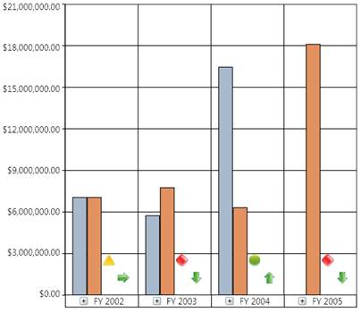

The KPI Elements can be defined in the OlapReport in the following way:
|
[C#]
/// <summary> /// OlapReport with KPI Elements /// </summary> /// <returns></returns> private OlapReport LoadBasicKPI() { OlapReport olapReport = new OlapReport();
// Selecting the Cube olapReport.CurrentCubeName = "Adventure Works";
KpiElements kpiElement = new KpiElements();
// Specifying the KPI Element name and configuring its Indicators kpiElement.Elements.Add(new KpiElement { Name = "Internet Revenue", ShowKPIGoal = true, ShowKPIStatus = true, ShowKPIValue = true, ShowKPITrend = true });
DimensionElement dimensionElementRow = new DimensionElement();
// Specifying the Name for Row Dimension Element dimensionElementRow.Name = "Date";
// Specifying the Level element dimensionElementRow.AddLevel("Fiscal", "Fiscal Year");
// Adding Row Elements olapReport.SeriesElements.Add(dimensionElementRow);
// Adding Column Elements olapReport.CategoricalElements.Add(kpiElement);
return olapReport; }
|
|
[VB]
''' <summary> ''' OlapReport with KPI Elements ''' </summary> ''' <returns></returns> Private Function LoadBasicKPI() As OlapReport Dim olapReport As New OlapReport()
' Selecting the Cube olapReport.CurrentCubeName = "Adventure Works"
Dim kpiElement As New KpiElements()
' Specifying the KPI Element name and configuring its Indicators kpiElement.Elements.Add(New KpiElement())
Dim dimensionElementRow As New DimensionElement()
' Specifying the Name for Row Dimension Element dimensionElementRow.Name = "Date"
' Specifying the Level element dimensionElementRow.AddLevel("Fiscal", "Fiscal Year")
' Adding Row Elements olapReport.SeriesElements.Add(dimensionElementRow)
' Adding Column Elements olapReport.CategoricalElements.Add(kpiElement)
Return olapReport End Function
|

Figure 64: OlapChart with Key Performance Indicators